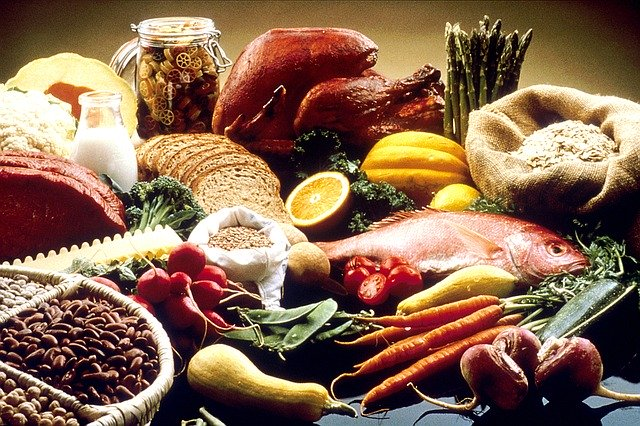
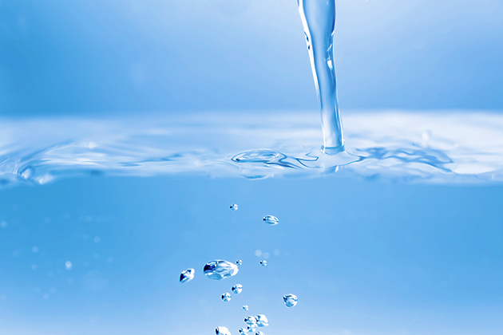
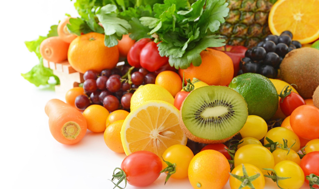
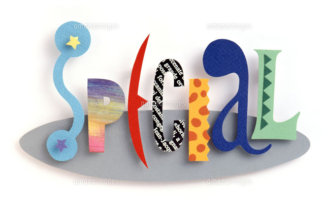
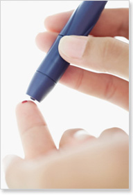
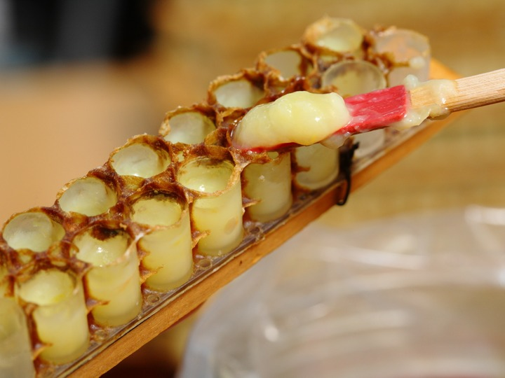
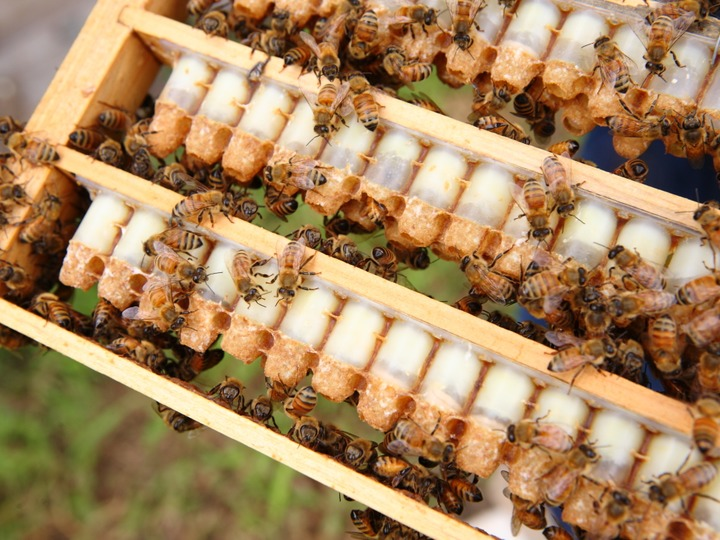
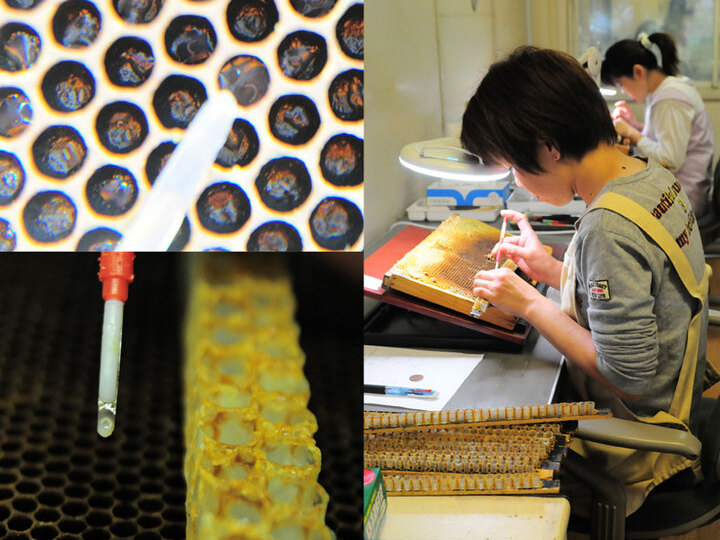
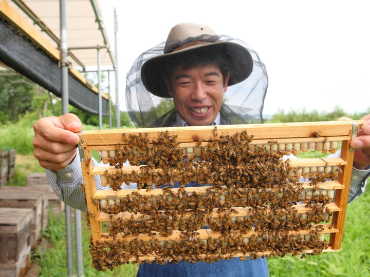

ブランド
ローヤルゼリーについて
昔から「不老長寿の薬」と呼ばれるローヤルゼリーは、若返りの為の健康食品として、年々その消費量は増加しています。
働き蜂が食べる花粉とはちみつは、腸内で消化・吸収されて栄養素となり、頭部にある咽頭腺に運ばれ、ローヤルゼリーとして蓄えられます。
働き蜂は必要なときに口喉から分泌し女王蜂の食べ物として、また女王蜂幼虫の餌として与えます。
このことから、ローヤルゼリーは「王乳」とも呼ばれているのです。
-

-
ミネラル
五大栄養素の一つで、神経の伝達や骨・歯の形成などに関わる栄養素です。 主要ミネラルと微量ミネラルのうち、8種類がローヤルゼリーに含まれています。
 -
ビタミン
健全な成長と健康維持に役立つだけでなく、他の栄養素の機能を促進させる働きを持ちます。ローヤルゼリーは、ビタミンB群を中心に10種類のビタミン類や、アセチルコリンなどの有用な成分も豊富に含んでいます。ビタミンのほとんどは体内で合成できないため、食べ物からの補給が欠かせません。
 -
特別な栄養素
ローヤルゼリーは「R物質」という特有成分を豊富に含有します。R物質は、世界中の科学者によって研究されており、成分の働きなどが徐々に明らかとなっています。 ビオプテリンやアピシンは、R物質に含まれる成分です。ビオプテリンは、酵素の働きを助ける機能があり、脳や肝臓に存在しています。アピシンは、いまだに謎に包まれている部分が多いものの、健康維持効果や老化抑制効果が期待されています。

ローヤルゼリーの効果
ローヤルゼリーのみを摂取した女王蜂は、食事の栄養成分の違いから、働き蜂の2倍もある体格となります。
また、働き蜂の寿命は約30日ですが、女王蜂の寿命は3～5年です。女王蜂は、産卵期に2,000個以上の卵を産んでも、寿命が尽きるまで若さを失うことはありません。
女王蜂がすくすくと育ち、若さを保ち続けられるのは、ローヤルゼリーを食していることが理由だといえるでしょう。
-
冷え性改善
-
筋力低下予防
-
肥満改善効果
-
お肌の改善効果
-
メンタル改善効果
-
血圧改善効果
-

血糖値改善効果
私達のこだわり
金剛養蜂場 みつばち農園
東 たけし
金剛養蜂場 みつばち農園は、大阪府の南部 金剛山の麓 みかん畑ひろがる里山にあります。
国内唯一の純国産ローヤルゼリー専門の養蜂場です。
養蜂歴30年の2代目養蜂家 東が採取しています。
本物の純国産ローヤルゼリーをお届けします。
-
世界一の鮮度でお届けします！3月〜12月の採取期間中には国内唯一、 早朝より採取した純国産ローヤルゼリーの即日出荷を可能としています。
鮮度が高いものほど有効成分の活性が高いと考えられています。
私達のローヤルゼリーは、何かを加えたり、加工したりしない自然のものです。 -
国内唯一ローヤルゼリー生産専門養蜂場みつばち農園では純国産ローヤルゼリー生産に特化し、高価な国産蜂蜜の採取をあきらめ、すべての国産蜂蜜を採取せずミツバチに餌として食べてもらい、貴重な純国産ローヤルゼリーを生産しています。 蜂蜜とローヤルゼリー生産の両立は難しいです。
-
すべて手作業で生産しています！養蜂家 東が、自家生産にこだわり、ローヤルゼリーの酸化をまねく真空ポンプ等の機械を使わず、少しずつ手作業で丁寧に採取した純国産ローヤルゼリーです。
徹底した品質管理のもと鮮度を維持してお客様にお届けします。 -
健康なミツバチを育てることが使命です!ミツバチ群の健康栄養状態を常に気遣い、3日ごとにミツバチ群の健康診断を行い、抗生物質 抗菌剤の投与を一切排除しています。
定期的に日本ローヤルゼリー協会に準ずる成分分析を行っております。
お客様の声
-
こちらのローヤルゼリーを飲み始めて3日でお肌の調子が良いのに気づきました。すばらしいです！国産蜂蜜と半々にして冷凍庫で保存して朝一番で食べています。先日、でき始めの口内炎に塗って休んだところ翌日は痛みがひいていました。
疲れた時は多めにとってぐっすり寝ると翌朝快調です。satchoko様
-
他社のロイヤルゼリーと比べてとても飲みやすくクセが少なく感じます。まだ、飲み始めて1ヶ月で１本目ですが早くもお肌のしっとり感とハリ感が以前と違う感じがしています。早速両親にもすすめました。私自身も今後手放せない感じです。直ぐに2本目を注文しようと思います。リピ決定です。
mei様
-
良質のしかも手頃な価格の、ロイヤルゼリーは、ないものかと、ネットとその他で、いろいろ捜しました。調べれば調べる程、良い。と確信し、購入しました。
娘と一緒に飲み始め大変満足しています。この価格だからこそ、続けたいと思います。世話好きママ様
-
軽い気持ちで試してみましたが、かなり体調いいです。 基本すぐに風邪をひいたり、とにかく体力ないんですが、免疫力がアップしたみたいでここのところ具合が悪くなったり疲れてへとへとになることが少なくなった気がします。
チーコ様
商品紹介
-

国産レンゲはちみつミックス（２００g）
¥16,200（税込）
-

純国産生ローヤルゼリー（30ｇ）
¥9,720（税込）
-

純国産生ローヤルゼリー（100ｇ）
¥27,000（税込）
-

純国産生ローヤルゼリー 原乳（100g）
¥24,750円（税込）
-

純国産ローヤルゼリー ハードカプセル
¥26,730円（税込）
よくある質問
-
はちみつとの違いはなんですか？はちみつは花の蜜を原料にした甘い液体ですが、ローヤルゼリーは主に花粉を原料としてミツバチが体内で作り出すもので、見た目は乳白色のクリームのような外観をしており、独特の苦味と酸味があります。また成分も全く異なり、はちみつがそのほとんどが糖質であるのに対し、ローヤルゼリーはタンパク質を多く含み、糖質、脂質、ビタミン、ミネラルなどをバランスよく含む完全食品です。女王バチはローヤルゼリーだけを食べて一生を過ごします。
-
ローヤルゼリーは健康な時にも必要ですか。多くの場合、病気は突然かかるのではなく、気付かない内に徐々に体をむしばんでいます。健康診断などで特に異常が見つからなくても、食欲がない、疲れが取れないといった症状が見られる場合はそのシグナルかもしれません。 ローヤルゼリーは、アミノ酸やビタミン、ミネラルなど健康維持に不可欠な栄養素を豊富に含んでいるため、普段のお食事では不足しがちな栄養成分を補っていただく手段として健康な時にもおすすめします。
-
ローヤルゼリーの味は？ハチミツのような甘味は無く、逆にすっぱい酸味があります。また、生ローヤルゼリーはデリケートですので、 冷蔵か冷凍保存しなければなりません。
-
ローヤルゼリーは、いつ飲めば良いのですか？いつお飲みになってもよいのですが、お腹の空いている時、特に吸収率が一番よいとされている朝食前の空腹時に飲まれることをおすすめします。
-
ローヤルゼリーの、おいしい飲み方は？ローヤルゼリーは含まれているデセン酸の酸により酸っぱく感じます。飲みにくいと思われたら水をご用意してお飲みになられると良いでしょう。水以外でも問題はありません。ハチミツに混ぜてお飲みになることをおすすめします。
-
糖尿病でも食べても良いのでしょうか？ハチミツの成分は主にブドウ糖と果糖です。ブドウ糖は体内に蓄積される事なく、すぐにエネルギーに変わ ります。マラソン選手のスペシャルドリンクや登山家の補助食品に使用されるほどエネルギー代謝にすぐれています。ですから、糖尿病の方でも大量に摂取しなければ問題ありません。
-
ローヤルゼリーの保存方法は？ローヤルゼリーは、基本的に冷蔵保存です。しかし、商品によって保存方法が異なります。弊社製品を例にご説明いたします。
① 生ローヤルゼリー：冷蔵庫（5度以下）で保存してください。
② ソフトカプセルタイプ（ゴールドキング・キング）：冷蔵庫（5度以下）で保存してください。
③ 粒状タイプ（ナイト）：あまり暑くないところであれば、旅行などの短期間持ち歩く程度では、常温保管が可能です。
農園概要
- 【金剛養蜂場】
-
〒584-0052
住所：大阪府富田林市佐備1000 - 電話番号：0721-55-2638
- メール：kongou-loyaljelly@gmail.com
-
営業時間：10：00～17：00
定休日：不定休
アミノ酸
人体を構成する細胞や酵素などを作り出す栄養素です。身体機能の維持・調整といった幅広い役割を担っています。近年、たんぱく質の研究が進み、ローヤルゼリーに含まれるたんぱく質が、女王蜂と働き蜂を分別する要因であることが分かってきました。たんぱく質は、複数のアミノ酸が結合した物質です。 ローヤルゼリーには、9種類の必須アミノ酸、その他の15種類のアミノ酸が含まれています。